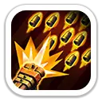
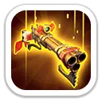
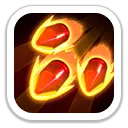
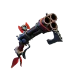

<main>
<div class="jero-page">
  <div class="jero-crumbs"><a href="index.html">Главная</a> › <a href="heroes.html">Герои</a> › Бланшетт</div>
  <section class="jero-hero">
    <div class="jero-portrait-wrap"></div>
    <div>
      <div class="jero-kicker"><span class="jero-chip gold">10 поколение</span><span class="jero-chip">Стрелки</span><span class="jero-chip">Мифический</span><span class="jero-chip">Бой</span></div>
      <h1>Бланшетт</h1>
      <p class="jero-subtitle">Массовый урон · запрет лечения · усиление стрелков</p>
      <p class="jero-lead">Бланшетт — главный доступный через Колесо удачи стрелок 10 поколения. Она одновременно сильна в Арене и PvP, полезна на Свирепом медведе и особенно хорошо раскрывается в атакующем сборе: режет лечение, усиливает смертоносность всех войск и наносит дополнительный урон стрелками.</p>
      <div class="jero-quick">
        <div><b>Получение</b><span>Колесо удачи 10 поколения и универсальные мифические фрагменты после открытия героя</span></div>
        <div><b>Главная роль</b><span>Арена, PvP, атакующие сборы и Свирепый медведь</span></div>
        <div><b>Для F2P</b><span>Один из главных приоритетов поколения благодаря Колесу удачи</span></div>
        <div><b>Проверено</b><span>23 октября 2026</span></div>
      </div>
    </div>
  </section>
  <nav class="jero-nav"><a href="#stats">Характеристики</a><a href="#explore">Освоение</a><a href="#expedition">Экспедиция</a><a href="#gear">Снаряжение</a><a href="#priority">Прокачка</a><a href="#modes">Режимы</a><a href="#pros">Плюсы и минусы</a></nav>
  <section class="jero-section" id="stats">
    <h2>Максимальные характеристики</h2><p class="jero-section-lead">Значения профиля героя на максимальной прокачке.</p>
    <div class="jero-stats">
      <div class="jero-stat"><strong>15 021</strong><span>Атака героя</span></div>
      <div class="jero-stat"><strong>12 364</strong><span>Защита героя</span></div>
      <div class="jero-stat"><strong>92 740</strong><span>Здоровье героя</span></div>
      <div class="jero-stat"><strong>1 110,88%</strong><span>Атака стрелков</span></div>
      <div class="jero-stat"><strong>1 110,88%</strong><span>Защита стрелков</span></div>
    </div>
    <div class="jero-note"><strong>Главная особенность:</strong> Бланшетт не просто наносит высокий урон. Её набор сочетает массовые атаки, блок лечения и стабильное усиление смертоносности всех войск, поэтому герой полезен сразу в нескольких боевых режимах.</div>
  </section>
  <section class="jero-section" id="explore">
    <h2>Навыки Освоения</h2><p class="jero-section-lead">Основной набор для Арены и Исследования.</p>
    <div class="jero-skill-grid">
      <article class="jero-skill"><div class="jero-skill-head"><div><h3>Тройной мушкетон</h3><small>Освоение</small></div></div><p>Модифицированный мушкет мгновенно поражает 3 цели и блокирует их лечение на 5 секунд.</p><p class="jero-values">Урон: 200 / 220 / 240 / 260 / 280% от атаки.</p></article>
      <article class="jero-skill"><div class="jero-skill-head"><div><h3>Скаттершот</h3><small>Освоение</small></div></div><p>Выстрел кристаллическими осколками наносит урон всем целям в области.</p><p class="jero-values">Урон: 100 / 110 / 120 / 130 / 140% от атаки.</p></article>
      <article class="jero-skill"><div class="jero-skill-head"><div><h3>Красная погоня</h3><small>Освоение</small></div></div><p>Чем меньше здоровья остаётся у цели, тем больше урона наносит Бланшетт. Особенно сильна при добивании раненых соперников.</p><p class="jero-values">Максимальный бонус урона: +10 / +20 / +30 / +40 / +50%.</p></article>
    </div>
  </section>
  <section class="jero-section" id="expedition">
    <h2>Навыки Экспедиции</h2><p class="jero-section-lead">Именно здесь находится её ценность для марша, сборов и Свирепого медведя.</p>
    <div class="jero-skill-grid">
      <article class="jero-skill"><div class="jero-skill-head"><div><h3>Вооружены до зубов</h3><small>Экспедиция</small></div></div><p>Повышает смертоносность всех войск. Бонус постоянный и не зависит от случайного срабатывания.</p><p class="jero-values">Смертоносность всех войск: +5 / +10 / +15 / +20 / +25%.</p></article>
      <article class="jero-skill"><div class="jero-skill-head"><div><h3>Охотник за кровью</h3><small>Экспедиция</small></div></div><p>Стрелки Бланшетт каждые 3 раунда выпускают кристаллический клинок и наносят дополнительный урон.</p><p class="jero-values">Дополнительный урон: +15 / +30 / +45 / +60 / +75%.</p></article>
      <article class="jero-skill"><div class="jero-skill-head"><div><h3>Багровый снайпер</h3><small>Экспедиция</small></div></div><p>Каждые 2 удара стрелки Бланшетт наносят повышенный урон вражеским копейщикам и стрелкам.</p><p class="jero-values">Против копейщиков: +8 / +16 / +24 / +32 / +40%. Против стрелков: +4 / +8 / +12 / +16 / +20%.</p></article>
    </div>
    <div class="jero-note"><strong>Для участия в чужом сборе:</strong> первый навык особенно удобен, потому что даёт стабильные +25% смертоносности всем войскам на 5 уровне.</div>
  </section>
  <section class="jero-section" id="gear">
    <h2>Эксклюзивное снаряжение</h2>
    <div class="jero-gear-layout">
      
      <div><h3 class="jero-gear-title">Охотник на волков</h3><p class="jero-section-lead">Максимальные бонусы: +3 041 к атаке героя, +2 506 к защите, +18 798 к здоровью, +277,5% к смертоносности стрелков и +277,5% к здоровью стрелков.</p>
        <div class="jero-gear-skills">
          <div class="jero-gear-skill"><div><b>Ярость Охотника</b><span>На максимуме повышает скорость атаки Бланшетт на 30% и продлевает блок лечения от «Тройного мушкетона» ещё на 5 секунд.</span></div></div>
          <div class="jero-gear-skill"><div><b>Удар молнии</b><span>На максимуме повышает смертоносность войск в сборе на 15%.</span></div></div>
        </div>
      </div>
    </div>
  </section>
  <section class="jero-section" id="priority">
    <h2>Приоритет прокачки</h2><p class="jero-section-lead">Если ресурсов мало, сначала усиливаем то, что даёт максимум пользы в основном режиме.</p>
    <div class="jero-priority">
      <div><b><span class="jero-rank">1</span>Вооружены до зубов</b><span>Ключевой навык Экспедиции: стабильная смертоносность всех войск.</span></div>
      <div><b><span class="jero-rank">2</span>Тройной мушкетон</b><span>Главный удар для Арены: три цели и запрет лечения.</span></div>
      <div><b><span class="jero-rank">3</span>Багровый снайпер</b><span>Сильный профильный урон стрелков, особенно против копейщиков.</span></div>
    </div>
    <div class="jero-note"><strong>Для F2P:</strong> Бланшетт имеет очень высокую ценность именно потому, что доступна через Колесо удачи. Разумная первая цель — уверенно поднять звёзды через колесо, а универсальные фрагменты беречь под стратегические добивки.</div>
  </section>
  <section class="jero-section" id="modes">
    <h2>Где использовать</h2>
    <div class="jero-mode-grid">
      <div class="jero-mode"><b>🏟️ Арена</b><p>Один из лучших режимов: массовый урон, запрет лечения и усиление урона по ослабленным целям.</p></div>
      <div class="jero-mode"><b>⚔️ PvP</b><p>Сильный стрелок атакующего марша. Особенно неприятна составам с копейщиками благодаря «Багровому снайперу».</p></div>
      <div class="jero-mode"><b>🐻 Свирепый медведь</b><p>Сильный кандидат на место стрелка у лидера сбора. Первый экспедиционный навык также делает её удобным участником чужих сборов.</p></div>
      <div class="jero-mode"><b>📣 Атакующий сбор</b><p>Эксклюзивное снаряжение добавляет до +15% смертоносности войскам сбора, а основной набор усиливает общий урон.</p></div>
    </div>
  </section>
  <section class="jero-section" id="pros">
    <h2>Плюсы и минусы</h2>
    <div class="jero-two">
      <div class="jero-box good"><h3>Плюсы</h3><ul><li>Доступна через Колесо удачи.</li><li>До +25% смертоносности всем войскам.</li><li>Массовый урон и длительный запрет лечения.</li><li>Сильный урон стрелков против копейщиков.</li><li>Полезна в Арене, PvP, сборе и на Медведе.</li><li>Эксклюзивное снаряжение усиливает атакующий сбор.</li></ul></div>
      <div class="jero-box bad"><h3>Минусы</h3><ul><li>Основной профиль урона в Экспедиции привязан к стрелкам.</li><li>Для максимума силы нужно эксклюзивное снаряжение.</li><li>Против состава без копейщиков часть преимущества «Багрового снайпера» меньше.</li><li>Как стрелок задней линии зависит от хорошего фронта в Арене.</li></ul></div>
    </div>
  </section>
  <section class="jero-section"><div class="jero-verdict"><h3>Итог</h3><p><strong>Бланшетт — один из самых выгодных героев 10 поколения для F2P.</strong> Колесо удачи делает её доступнее платных героев поколения, а набор навыков не узкий: она закрывает Арену, PvP, атакующие сборы и Свирепого медведя. Если переходите на 10 поколение и выбираете, куда направить самоцветы, Бланшетт — естественный первый кандидат.</p></div>
    <div class="jero-sources"><a href="https://whiteout-survival.com/ru/heroes/blanchette/" target="_blank" rel="noopener">Источник: профиль Бланшетт</a><a href="https://whiteoutlab.ru/wiki/heroes/blanchette" target="_blank" rel="noopener">Проверка русских названий и значений: WOS Lab</a><a href="https://www.whiteoutsurvival-community.com/tools/wiki/heroes-db.html" target="_blank" rel="noopener">Дополнительная проверка характеристик и снаряжения</a><a href="https://wosguru.com/hero/blanchette" target="_blank" rel="noopener">Дополнительная проверка применения героя</a></div>
    <a class="jero-back" href="heroes.html">← Все герои</a>
  </section>
  <div class="jero-foot">Белая мгла · SOVA58 · данные проверены 23 октября 2026</div>
</div>
</main>